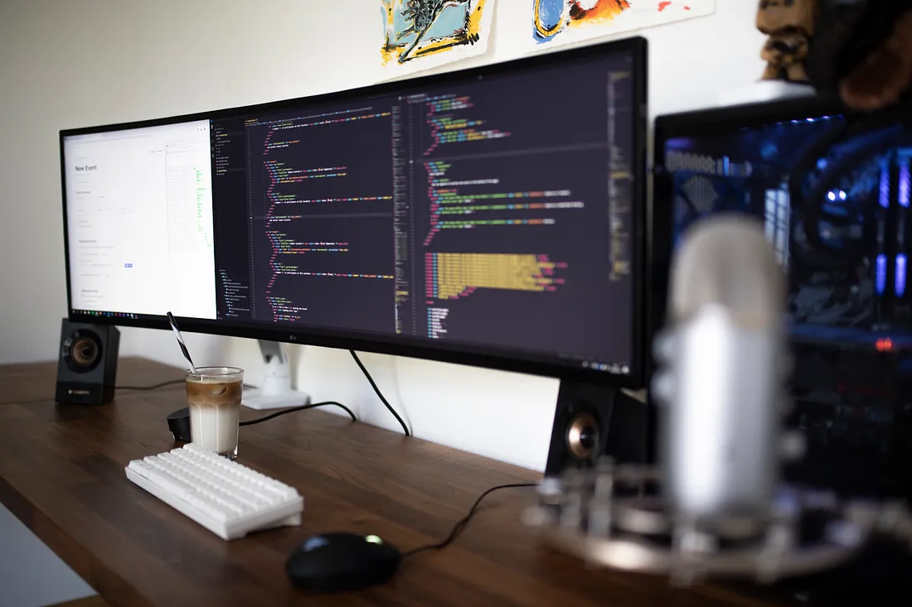

Hi, my name is
A full-stack software engineer and technical writer based in Entebbe, Uganda. I build dynamic, user-friendly applications that meet the needs of a wide range of clients. I also find great joy in sharing my knowledge and expertise with others, and take pride in mentoring aspiring developers in the same trade.
roland1sankara@gmail.com
Software Engineer | Technical Mentor | DevOps Engineer | Toastmaster.
I am a software engineer and technical trainer/mentor driven by a deep passion for technology with over 5+ years of experience. I leverage my expertise to create innovative digital solutions and empower others through tech mentorship.
Shortly after my high school, i joined Andela Uganda for the Teen Code program where I got really fascinated about how computers work and the ability to solve real world problems with them. Learning and growing in technology has been my thing from then onwards.
Here are a few technologies i have been working with recently.
October 2022 - Present
Medium Blog
Learn all you need to know about neural networks and Keras — no worries, you’ll have fun learning the intricacies here. PS: This article got published on freeCodeCamp.org, check it out here

Medium Blog
React Query is a powerful library that simplifies data fetching, caching, and state management in React applications. In this tutorial, I’ll guide you through setting up a React project using Vite and dive deep into using React Query to fetch data from a public API https://randomuser.me/.
Medium Blog
Time management is an essential skill that can help us be more productive and achieve our goals. Unfortunately many individuals, myself included, struggle with it. But why is that? What could be done to improve time management and enable us to do more?
Developed the new NSSF Innovator website. The goal was to showcase the progress and achievements of the NSSF Hi-innovator initiative that supports small and growing businesses by extending catalytic seed funding, building the capacity of ESOs to provide technical assistance.
Redeveloped the UI of the GetIn Web App, a community referral system for supporting outreach to pregnant girls in rural Uganda, in collaboration with Marie Stopes. Leveraging reusable components, unit, and integration tests to ensure a reliable, functional, readable, and maintainable codebase
Developed an efficient USSD web server callback to handle requests leveraging the NITA(U) Mobile Service Delivery API, a solution the Project Manager considered in the final project implementation. This tool enabled GBV victims to report cases via USSD on their cell phones
Am currently looking out for new opportunities for growth in technology, my inbox is always open, whether you have a question, an opportunity or just saying hello. I'll be very glad to reach out.